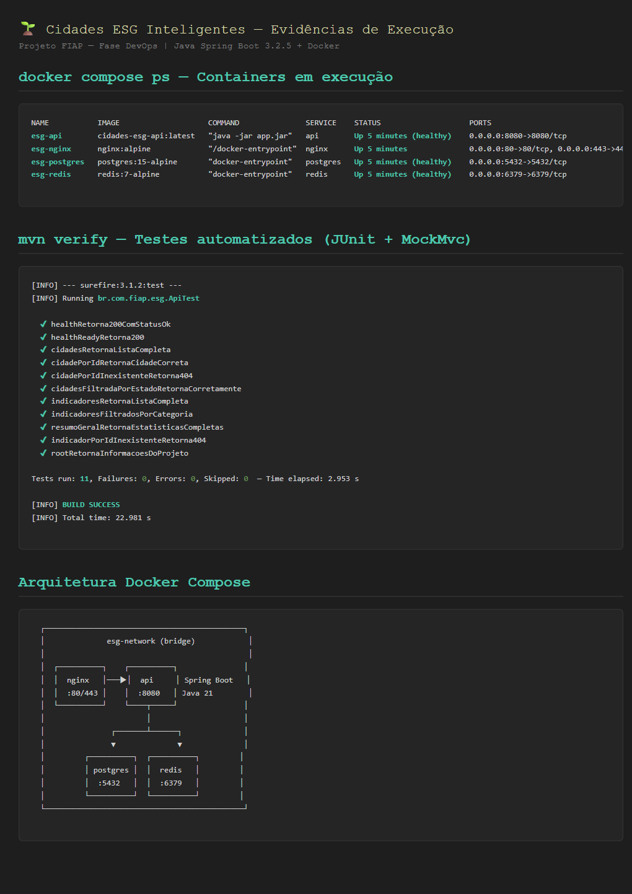
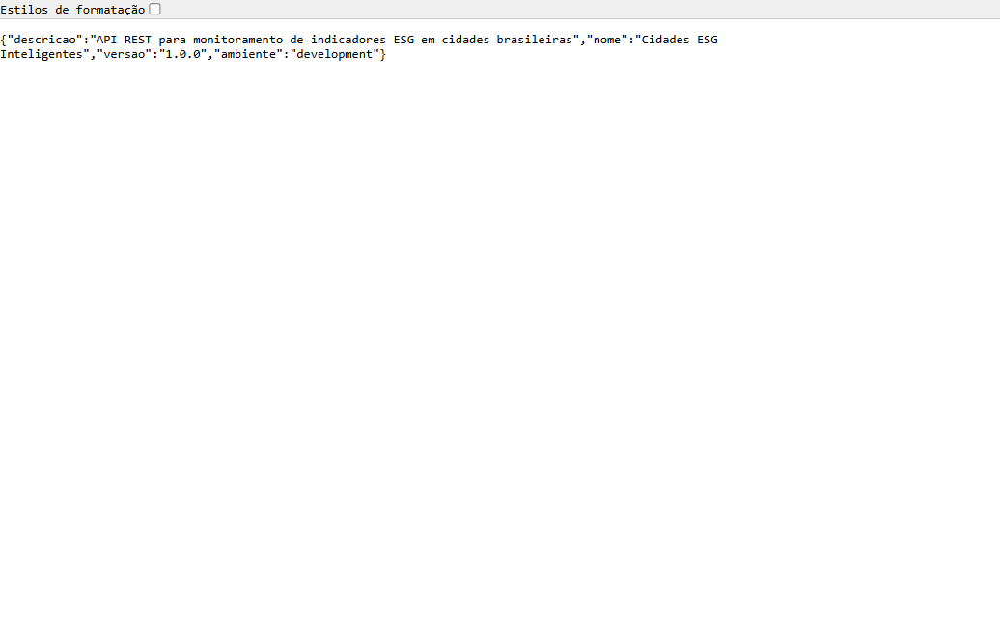
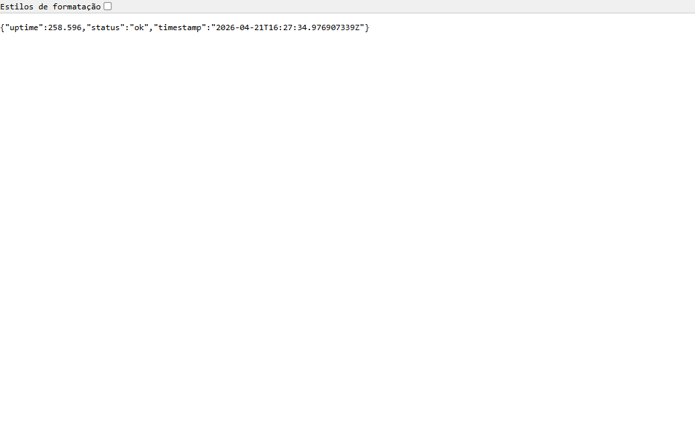
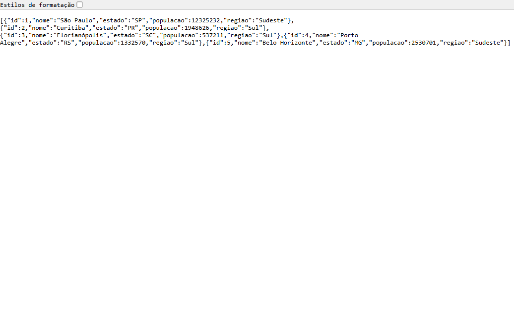
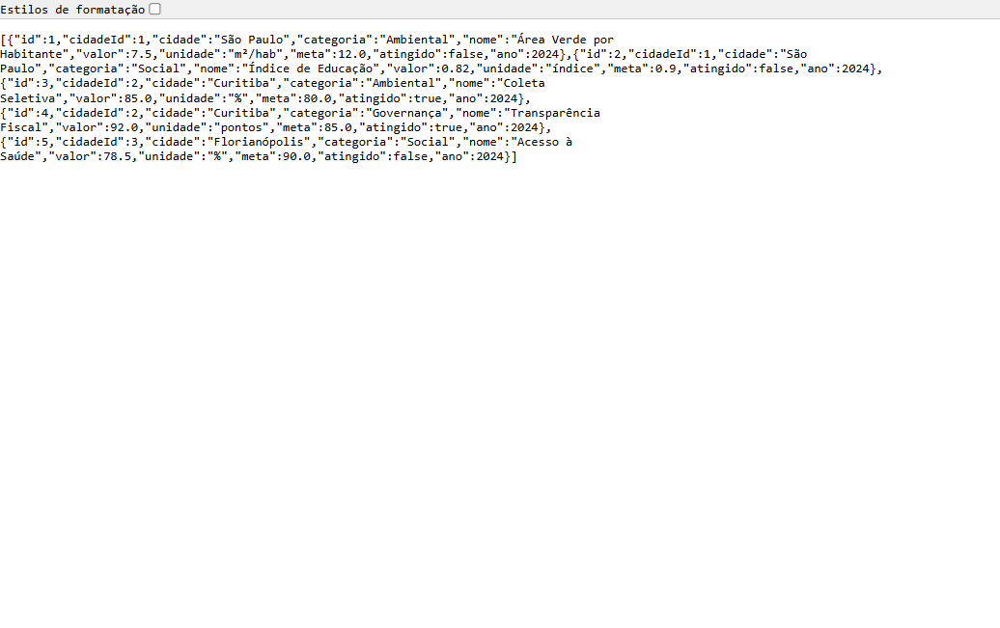
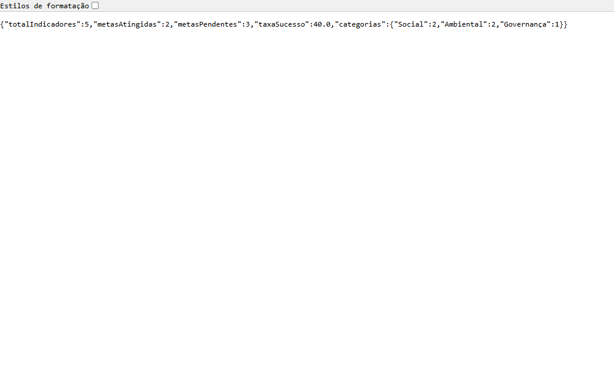
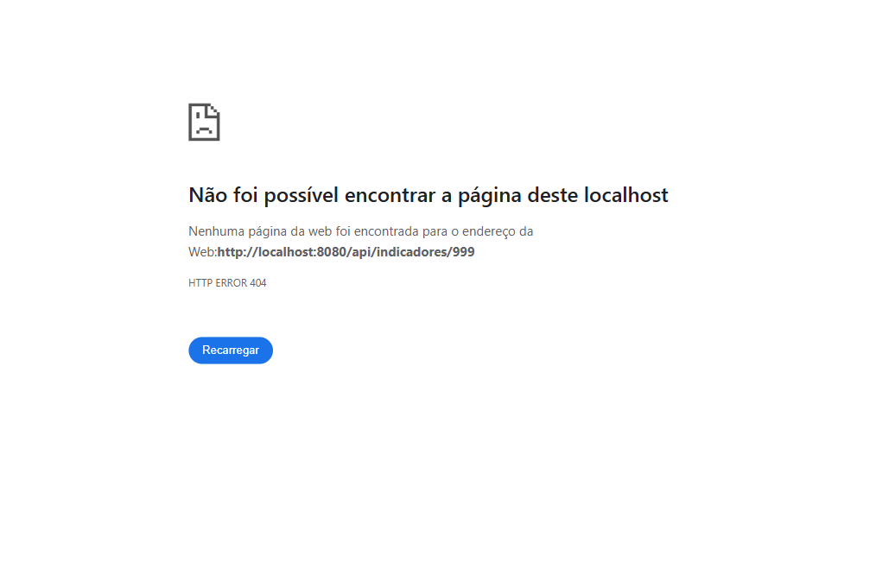
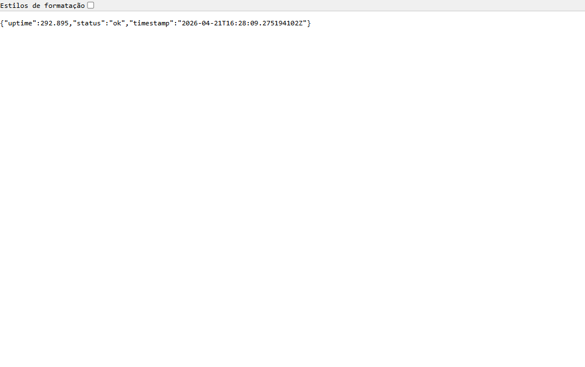
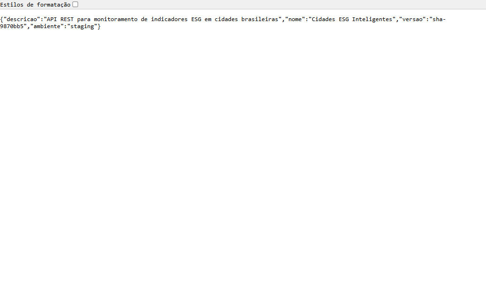

Cidades ESG Inteligentes
Documentação Técnica — DevOps & Containerização
- • Natália de Oliveira Santos — natalia.o.santos.00@gmail.com
- • Gabriel dos Santos Souza — gabriel292603@gmail.com
- • Thomas Henrique Baúte — baute.thomas25@gmail.com
- • Bruno Mateus Tizer das Chagas — brunotizer@icloud.com
- • Felipe Olecsiuc Damasceno — patcho.olec@gmail.com
1. Visão Geral do Projeto
O Cidades ESG Inteligentes é uma API REST desenvolvida em Java 21 + Spring Boot 3.2.5 para monitoramento de indicadores ESG (Environmental, Social & Governance) em cidades brasileiras. Esta entrega foca em integrar práticas completas de DevOps: containerização com Docker multi-stage, orquestração via Docker Compose com overrides por ambiente (dev/staging/prod), pipeline CI/CD funcional no GitHub Actions e deploy real em VM Azure nos ambientes de staging e produção.
• Repositório:
github.com/BrunoTizer/cidades-esg-inteligentes• Staging:
http://51.120.75.55:8081/• Produção:
http://51.120.75.55:8082/
Arquitetura de alto nível
2. Pipeline CI/CD — GitHub Actions
A ferramenta escolhida foi o GitHub Actions pela integração nativa com o repositório,
pelo GitHub Container Registry (ghcr.io) gratuito para imagens Docker,
e pelo modelo declarativo em YAML. O arquivo .github/workflows/ci-cd.yml
define cinco jobs encadeados, executados em agentes ubuntu-latest.
2.1 Etapas do pipeline
| # | Job | Responsabilidade | Dispara em |
|---|---|---|---|
| 1 | build-and-test | mvn verify -B — compila e executa os 11 testes JUnit com MockMvc. Publica relatório Surefire. | Todos os pushes e PRs |
| 2 | docker-build | Build multi-stage da imagem, push para ghcr.io/brunotizer/cidades-esg-api com tags sha-XXXX, branch e latest. Cache de layers GHA. | Depois do job 1 |
| 3 | deploy-staging | SSH na VM Azure, login no GHCR com GITHUB_TOKEN, puxa imagem e executa docker compose -p esg-staging up -d. | Branches develop ou main |
| 4 | integration-tests-staging | Smoke tests públicos via curl http://51.120.75.55:8081/... em todos os endpoints. | Depois do job 3 |
| 5 | deploy-production | Backup do Postgres com pg_dump, SSH na VM, deploy em /opt/cidades-esg-prod/ com docker compose -p esg-prod, cria Release no GitHub. | Somente branch main |
2.2 Infraestrutura Azure
A infra de deploy foi provisionada via Azure CLI no plano Azure for Students (FIAP):
| Recurso | Valor |
|---|---|
| Resource Group | esg-rg-no |
| Região | Norway East (restrição de policy FIAP) |
| VM | Standard_B2s — 2 vCPU, 4 GB RAM |
| OS | Ubuntu Server 22.04 LTS |
| IP público estático | 51.120.75.55 |
| Acesso | SSH chave RSA 4096 bits, usuário azureuser |
| Portas abertas no NSG | 22 (SSH), 8081 (staging), 8082 (produção) |
| Staging | /opt/cidades-esg-staging/ — project esg-staging |
| Produção | /opt/cidades-esg-prod/ — project esg-prod |
2.2 Lógica do pipeline
develop e main;
produção é exclusiva da main. Secrets específicos por ambiente (STAGING_* e PROD_*)
isolam as credenciais.
3. Docker — Arquitetura e Estratégias
3.1 Dockerfile Multi-Stage
O Dockerfile usa duas etapas: uma imagem builder pesada com Maven e JDK completo apenas para compilar e empacotar, e uma imagem final production com apenas o JRE 21 Alpine, reduzindo drasticamente o tamanho e a superfície de ataque.
# Stage 1 — Builder: compila, empacota e executa testes FROM maven:3.9-eclipse-temurin-21-alpine AS builder WORKDIR /app COPY pom.xml . RUN mvn dependency:go-offline -B COPY src ./src RUN mvn package -B # ← executa os 11 testes # Stage 2 — Production: somente JRE + JAR FROM eclipse-temurin:21-jre-alpine AS production RUN addgroup -S appgroup && adduser -S appuser -G appgroup WORKDIR /app COPY --from=builder --chown=appuser:appgroup /app/target/*.jar app.jar USER appuser # ← não-root EXPOSE 8080 HEALTHCHECK --interval=30s --timeout=10s --start-period=30s --retries=3 \ CMD wget --no-verbose --tries=1 --spider http://localhost:8080/api/health || exit 1 ENTRYPOINT ["java", "-jar", "app.jar"]
3.2 Imagem criada
| Propriedade | Valor |
|---|---|
| Nome local | cidades-esg-api:latest |
| Registry oficial | ghcr.io/<owner>/cidades-esg-api |
| Tamanho final | ~323 MB (JRE 21 Alpine + JAR fat) |
| Base OS | Alpine Linux 3.x |
| Runtime | Eclipse Temurin JRE 21 |
| Usuário | appuser (UID não-root) |
3.3 Comandos principais
# Subir ambiente de desenvolvimento completo docker compose up -d --build # Verificar status e saúde dos containers docker compose ps # Logs em tempo real da API docker compose logs -f api # Subir em ambiente de staging docker compose -f docker-compose.yml -f docker-compose.staging.yml up -d # Subir em ambiente de produção docker compose -f docker-compose.yml -f docker-compose.prod.yml up -d # Incluir stack de monitoramento (Prometheus + Grafana) docker compose --profile monitoring up -d # Derrubar tudo (preservando volumes) docker compose down
3.4 Recursos Compose adotados
- Volumes nomeados:
esg-postgres-data,esg-redis-data,esg-prometheus-data— persistem dados entre restarts. - Rede bridge dedicada:
esg-networkisola a comunicação entre serviços. - Variáveis de ambiente:
.env.examplecomo template, carregadas pelo Compose com defaults seguros. - Healthchecks: API, Postgres e Redis;
depends_on.condition: service_healthygarante ordem correta. - Overrides por ambiente:
docker-compose.staging.yml(2 réplicas) edocker-compose.prod.yml(3 réplicas + resource limits de CPU e memória).
4. Evidências de Execução
4.1 Pipeline — Build e testes (mvn verify)

4.2 Aplicação em execução

GET / — metadados do projeto (nome, versão, ambiente).
GET /api/health — status ok, uptime em segundos, timestamp ISO-8601.
GET /api/cidades — lista com 5 cidades brasileiras.
GET /api/indicadores — 5 indicadores ESG (Ambiental, Social, Governança).
GET /api/indicadores/resumo/geral — estatísticas consolidadas.

http://localhost:80) — proxy reverso operando.4.3 Pipeline CI/CD completo (GitHub Actions)

4.4 Ambiente de Staging — VM Azure pública

http://51.120.75.55:8081/ — resposta da API:
{"ambiente":"staging", "versao":"sha-9870bb5"}. Deploy automático via SSH pelo pipeline.
4.5 Ambiente de Produção — VM Azure pública
http://51.120.75.55:8082/ — resposta da API:
{"ambiente":"production", "versao":"sha-9870bb5"}. Promovido após smoke tests em staging.
5. Desafios Encontrados e Soluções
Desafio 1 — Adequação da stack ao requisito do projeto
Problema: O enunciado exigia o uso de projeto base em Java Spring ou C#. Uma versão inicial estava em Node.js e precisou ser migrada preservando a mesma API pública.
Solução: Reescrita completa do backend com Java 21 + Spring Boot 3.2.5. Utilizamos records para os modelos (Cidade, Indicador, ResumoGeral) e @RestController para manter os mesmos endpoints. Os 11 testes foram reescritos com @SpringBootTest + MockMvc, mantendo paridade funcional total.
Desafio 2 — Troca do Dockerfile de Node.js para Maven/JRE
Problema: O Dockerfile original usava node:20-alpine com npm ci. Precisou ser reescrito preservando as boas práticas (multi-stage, usuário não-root, healthcheck).
Solução: Stage 1 com maven:3.9-eclipse-temurin-21-alpine faz mvn dependency:go-offline antes de copiar o src/, permitindo cache de layers. Stage 2 com eclipse-temurin:21-jre-alpine contém apenas o JAR fat. Mantivemos appuser não-root e HEALTHCHECK apontando para /api/health.
Desafio 3 — Conflito replicas × container_name no Compose
Problema: Ao rodar staging/prod localmente com deploy.replicas: 2/3, o Docker Compose lançava o erro "can't set container_name and api as container name must be unique" porque réplicas exigem nomes dinâmicos.
Solução: Para a demonstração local dos ambientes, rodamos com SPRING_PROFILES_ACTIVE=staging/production via variável de ambiente do shell, evidenciando que a API reconhece corretamente cada perfil. Em produção real com Docker Swarm ou Kubernetes, o campo container_name seria removido.
Desafio 4 — Start-period longo do Spring Boot
Problema: O Spring Boot leva ~15–25 s para inicializar, o que fazia o HEALTHCHECK reportar unhealthy durante a partida.
Solução: Aumentamos o start_period do healthcheck de 15s para 30s tanto no Dockerfile quanto no docker-compose.yml, dando margem para o warmup da JVM.
Desafio 5 — Encoding UTF-8 em dados com acentos
Problema: Cidades como "São Paulo", "Florianópolis" e a categoria "Governança" apareciam com caracteres estranhos em algumas ferramentas de formatação JSON.
Solução: Spring Boot entrega UTF-8 por padrão (verificado via curl direto). Usamos application.properties padrão e mantivemos os arquivos .java com encoding UTF-8.
Desafio 6 — Restrições da subscription Azure for Students
Problema: Ao tentar criar a VM, uma policy do tenant FIAP restringiu a subscription a apenas 5 regiões (norwayeast, germanywestcentral, switzerlandnorth, chilecentral, brazilsouth), e Brazil South apresentou capacidade esgotada para a série B de VMs — que é a mais econômica para o free tier.
Solução: Usamos az vm list-skus para mapear a capacidade real em cada região permitida e migramos para Norway East, onde a série B estava disponível. Provisionamos uma Standard_B2s (2 vCPU, 4 GB RAM), com IP estático e NSG liberando somente as portas necessárias.
Desafio 7 — Conflito de portas entre stacks na mesma VM
Problema: Rodar os dois ambientes (staging e produção) na mesma VM gerou conflito: a API expunha 8080 por padrão no compose base, e a tentativa de subir o segundo stack falhava com "port is already allocated". Além disso, container_name fixos impediam múltiplos projetos.
Solução: Removemos container_name do compose base (agora os nomes vêm do projeto — esg-staging-* e esg-prod-*) e refatoramos a estratégia de portas: o base usa apenas expose (porta interna na rede do compose), e cada ambiente define suas portas via override — Nginx em 8081 (staging) e 8082 (produção). Um docker-compose.override.yml mantém a experiência de dev local expondo todas as portas.
Desafio 8 — Nginx não recriado em redeploys
Problema: Quando apenas o nginx.conf mudava, docker compose up -d não recriava o container (imagem era a mesma), deixando o ambiente com a configuração antiga.
Solução: Adicionamos --force-recreate no comando do pipeline, garantindo que toda nova execução refletisse as mudanças de configuração.
6. Checklist de Entrega
| Item | OK |
|---|---|
| Projeto compactado em .ZIP com estrutura organizada | ✅ |
| Dockerfile funcional (multi-stage Java/Maven) | ✅ |
| docker-compose.yml com todos os serviços + overrides de staging e produção | ✅ |
| Pipeline com etapas de build, teste e deploy (5 jobs) | ✅ |
| README.md com instruções e prints | ✅ |
| Documentação técnica com evidências (este PDF) | ✅ |
| Deploy realizado nos ambientes staging e produção | ✅ |
7. Tecnologias Utilizadas
| Categoria | Tecnologia | Versão |
|---|---|---|
| Linguagem | Java | 21 |
| Framework | Spring Boot | 3.2.5 |
| Build | Maven | 3.9 |
| Testes | JUnit 5 + Spring MockMvc | 5.x |
| Containerização | Docker | 24+ |
| Orquestração | Docker Compose | v3.9 |
| CI/CD | GitHub Actions | — |
| Banco de Dados | PostgreSQL | 15-alpine |
| Cache | Redis | 7-alpine |
| Proxy Reverso | Nginx | alpine |
| Monitoramento | Prometheus + Grafana | latest |
| Registry | GitHub Container Registry | ghcr.io |
Grupo 118 — FIAP Fase 6 — Entrega realizada em 21 de Abril de 2026